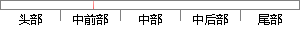

(1)监督式学习（Supervised Learning），常见算法有逻辑回归（Logistic Regression）和反向传递神经网络（Back Propagation Neural Network）；
片段位置图

相似结果|
1
原句片段：(1)监督式学习（Supervised Learning），常见算法有逻辑回归（Logistic Regression）和反向传递神经网络（Back Propagation Neural Network）；
相似片段 1：监督式学习: 在监督式学习下, 输入数据被称为“训练数据”,每组训练数据有一...常见算法有逻辑回归 (Logistic Regression) 和反向传递神经网络(Back Propagation ...
相似片段 2：常见算法有逻辑回归(Logistic Regression)和反向传递神经网络(Back Propagation ...由于存在大量的非标识的数据和少量的可标识数据, 目前半监督式学习是一个很热...
相似片段 3：在监督式学习下,输入数据被称为“训练数据”,每组训练数据有一个明确的标识或结果...常见算法有逻辑回归(Logistic Regression)和反向传递神经网络(Back Propagation ...
相似片段 4：监督式学习: 在监督式学习下,输入数据被称为“训练数据”,每组训练数据有一个...常见算法有逻辑回归(Logistic Regression)和 反向传递神经网络(Back Propagation ...
相似片段 5：在监督式学习下,输入数据被称为“训练数据”,每组训练数据有一个明确的标识或结果...常见算法有逻辑回归(Logistic Regression)和反向传递神经网络(Back Propagation ...
相似片段 6：Supervised Learning 在监督式学习下,输入数据被称为...常见算法有逻辑回归(Logistic Regression)和反向传递神...
相似片段 7：监督式学习: 在监督式学习下,输入数据被称为“训练数据”,每组训练数据有一个...常见算法有逻辑回归 (Logistic Regression) 和反向传递神经网络 (Back Propagation...
|
※ 片段修改建议 ※
近似词参考：- 监督：监视
- 学习：进修
- 传递：通报
系统自动生成语句：(1)监视式进修（Supervised Learning），常见算法有逻辑回归（Logistic Regression）和反向通报神经网络（Back Propagation Neural Network）；
注：本片段修改建议为系统自动生成，仅供参考。